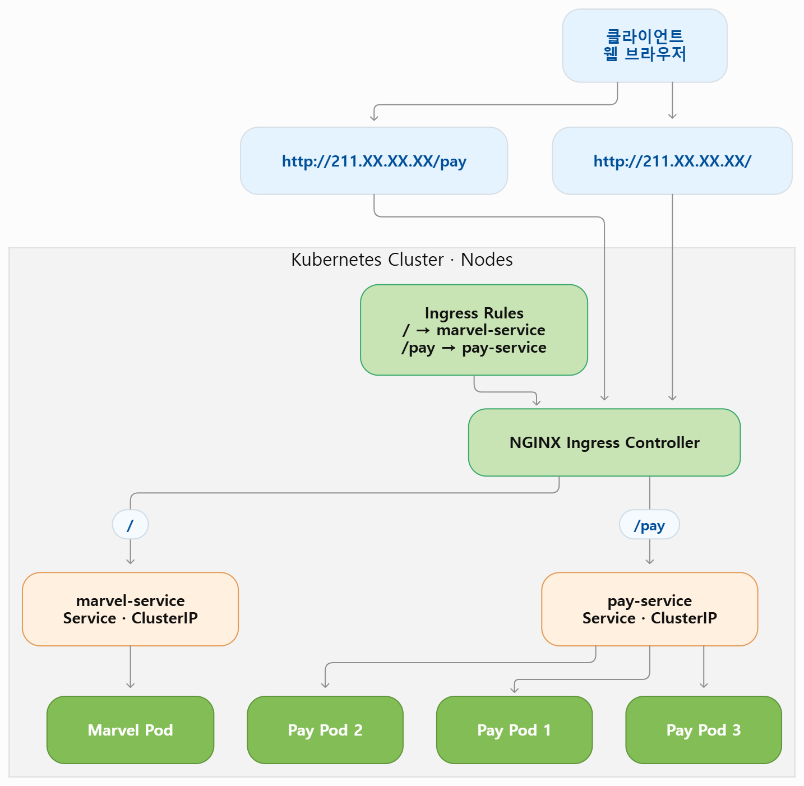

인그레스 (Ingress)
Ingress란?
Kubernetes Ingress는 클러스터 외부의 HTTP/HTTPS 트래픽을 클러스터 내부 Service로 라우팅하는 API 객체이다. 여러 Service에 대한 외부 접근을 단일 진입점(Entry Point)으로 제공하고, 도메인 기반/경로 기반 라우팅, TLS 종료, 리버스 프록시, 로드밸런싱, URL 재작성 등 L7 기능을 제공한다.
비용 절감
여러 Load Balancer 대신 하나의 Ingress로 통합
유연한 라우팅
도메인/경로 기반 스마트 라우팅
보안
TLS 종료, 인증, 접근 제어 등 보안 기능 적용
운영 단순화
중앙 집중식 관리로 운영 효율 향상
전체 동작 흐름
외부 사용자💻 🖥️ 📱
https://app.example.com
https://api.example.com
https://example.com/shop
→
☁️ 인터넷
→
외부 Load Balancer(Cloud LB)
예: AWS ALB/NLB,
GCP GLB, Azure LB
예: AWS ALB/NLB,
GCP GLB, Azure LB
↓
Kubernetes Cluster
Ingress Controller예: NGINX Ingress Controller
→
Ingress 규칙 (예: 3개)
Kubernetes Service
Endpoints (Pods)
Host: app.example.com
Path: /
Path: /
→
Service: app-svc
Port: 80
Port: 80
→
📦📦📦
Host: api.example.com
Path: /
Path: /
→
Service: api-svc
Port: 8080
Port: 8080
→
📦📦📦
Host: example.com
Path: /shop
Path: /shop
→
Service: shop-svc
Port: 80
Port: 80
→
📦📦📦
1외부 사용자가 도메인으로 요청
2외부 Load Balancer로 트래픽 전달
3Ingress Controller가 Ingress 규칙을 확인하여 적절한 Service로 라우팅
4Service가 Pod(엔드포인트)로 트래픽 전달
Ingress 리소스 구성 예시
apiVersion: networking.k8s.io/v1
kind: Ingress
metadata:
name: example-ingress
namespace: default
annotations:
nginx.ingress.kubernetes.io/use-regex: "true"
nginx.ingress.kubernetes.io/rewrite-target: /$2 # ② URL 재작성 규칙
spec:
ingressClassName: nginx # ① Ingress Controller 선택
tls: # ③ TLS 설정
- hosts:
- app.example.com
- api.example.com
secretName: example-tls # TLS 인증서(Secret) 참조
rules: # ④ 호스트별 라우팅 규칙
- host: app.example.com
http:
paths:
- path: /
pathType: Prefix
backend:
service:
name: app-svc
port:
number: 80
- host: api.example.com
http:
paths:
- path: /
pathType: Prefix
backend:
service:
name: api-svc
port:
number: 8080
- host: example.com
http:
paths:
- path: /shop(/|$)(.*)
pathType: ImplementationSpecific
backend:
service:
name: shop-svc
port:
number: 801)
Ingress Controller 선택 :
ingressClassName: nginx (여기서는 NGINX)2)
URL 재작성 규칙 : 예:
/shop/xxx → /xxx3)
TLS 설정 : 여러 도메인에 대한 HTTPS 제공, Secret에 인증서/키 저장
4)
호스트별 라우팅 규칙 :
app.example.com → app-svc, api.example.com → api-svc, example.com/shop → shop-svc주요 기능
도메인 기반 라우팅
Host 헤더를 기준으로 서로 다른 Service로 라우팅
경로 기반 라우팅
URL 경로(Path)를 기준으로 라우팅
TLS/HTTPS 종료
Ingress에서 TLS를 처리하고 클러스터 내부는 HTTP로 통신 가능
리버스 프록시
클라이언트 요청을 받아 내부 Service로 전달
URL 재작성
요청 경로를 변경하여 백엔드 Service로 전달
로드밸런싱
여러 Pod(엔드포인트)로 트래픽을 분산
확장성
여러 Ingress Controller를 통해 고가용성/성능 확장
주의사항 & 모범사례
✓Ingress Controller는 반드시 클러스터에 1개 이상 설치되어 있어야 한다.
✓프로덕션 환경에서는 TLS를 사용하여 통신을 암호화
✓도메인/경로 규칙이 겹치지 않도록 주의하여 설계
✓인증서(Secret)는 만료를 주기적으로 확인하고 갱신
✓Controller 및 Ingress 리소스는 모니터링과 로그 수집을 설정
✓적절한 리소스 요청/제한을 설정하여 안정적인 운영을 보장
한눈에 정리
Ingress는 클러스터의 단일 진입점(엔트리)으로서, 외부 트래픽을 안전하게 수용하고 스마트하게 라우팅하여 마이크로서비스 아키텍처의 핵심 네트워킹 컴포넌트 역할을 한다.
사용자 → 인터넷 → Load Balancer → Ingress Controller → Service → Pod
Ingress Controller
Ingress 리소스의 규칙을 실제로 구현(엔트리)하는 컴포넌트이다. 대표적인 Ingress Controller:
NGINX Ingress ControllerTraefikHAProxy IngressAWS Load Balancer ControllerGCP Ingress Controller기타
Ingress Controller 설치
- 쿠버네이트io 사이트에서 ingress 검색후 nginx 관련 링크를 선택하면
- 깃헙으로 이동하게 되고
- Getting Start 누르면
- install guide가 나오는데, 이때 Contents에서 Bare-Metal을 선택
- 항목 : kubectl apply -f https://raw.githubusercontent.com/kubernetes/ingress-nginx/controller-v1.5.1/deploy/static/provider/baremetal/deploy.yaml 에서 url만 딴뒤
- 다운받은 deploy.yaml 실행
kubectl create -f deploy.yaml namespace/ingress-nginx created serviceaccount/ingress-nginx created serviceaccount/ingress-nginx-admission created role.rbac.authorization.k8s.io/ingress-nginx created role.rbac.authorization.k8s.io/ingress-nginx-admission created clusterrole.rbac.authorization.k8s.io/ingress-nginx created clusterrole.rbac.authorization.k8s.io/ingress-nginx-admission created rolebinding.rbac.authorization.k8s.io/ingress-nginx created rolebinding.rbac.authorization.k8s.io/ingress-nginx-admission created clusterrolebinding.rbac.authorization.k8s.io/ingress-nginx created clusterrolebinding.rbac.authorization.k8s.io/ingress-nginx-admission created configmap/ingress-nginx-controller created service/ingress-nginx-controller created service/ingress-nginx-controller-admission created deployment.apps/ingress-nginx-controller created job.batch/ingress-nginx-admission-create created job.batch/ingress-nginx-admission-patch created ingressclass.networking.k8s.io/nginx created validatingwebhookconfiguration.admissionregistration.k8s.io/ingress-nginx-admission created
- 확인
kubectl get pod -n ingress-nginx NAME READY STATUS RESTARTS AGE ingress-nginx-admission-create-hnsxv 0/1 Completed 0 33s ingress-nginx-admission-patch-kf24f 0/1 Completed 0 33s ingress-nginx-controller-6c56945c75-ld9wt 1/1 Running 0 33s kubectl get svc -n ingress-nginx NAME TYPE CLUSTER-IP EXTERNAL-IP PORT(S) AGE ingress-nginx-controller NodePort 10.104.91.74 <none> 80:32548/TCP,443:31497/TCP 52s ingress-nginx-controller-admission ClusterIP 10.96.160.38 <none> 443/TCP 52s
Ingress 동작


출처 : 유튜브 따배런 따배쿠 https://www.youtube.com/@ttabae-learnkubectl get namespaces
default Active 8d
ingress-nginx Active 27m
kube-node-lease Active 8d
kube-public Active 8d
kube-system Active 8d
kubectl get all -n ingress-nginx
NAME READY STATUS RESTARTS AGE
pod/ingress-nginx-admission-create-hnsxv 0/1 Completed 0 28m
pod/ingress-nginx-admission-patch-kf24f 0/1 Completed 0 28m
pod/ingress-nginx-controller-6c56945c75-ld9wt 1/1 Running 0 28m
NAME TYPE CLUSTER-IP EXTERNAL-IP PORT(S) AGE
service/ingress-nginx-controller NodePort 10.104.91.74 <none> 80:30100/TCP,443:30200/TCP 28m
service/ingress-nginx-controller-admission ClusterIP 10.96.160.38 <none> 443/TCP 28m
NAME READY UP-TO-DATE AVAILABLE AGE
deployment.apps/ingress-nginx-controller 1/1 1 1 28m
NAME DESIRED CURRENT READY AGE
replicaset.apps/ingress-nginx-controller-6c56945c75 1 1 1 28m
NAME COMPLETIONS DURATION AGE
job.batch/ingress-nginx-admission-create 1/1 10s 28m
job.batch/ingress-nginx-admission-patch 1/1 10s 28m
ingress 샘플만들기
#minimal-ingress
apiVersion: networking.k8s.io/v1
kind: Ingress
metadata:
name: minimal-ingress
annotations:
nginx.ingress.kubernetes.io/rewrite-target: /
spec:
ingressClassName: nginx-example
rules:
- http:
paths:
- path: /testpath
pathType: Prefix
backend:
service:
name: test
port:
number: 80
#wildcard-ingress
apiVersion: networking.k8s.io/v1
kind: Ingress
metadata:
name: ingress-wildcard-host
spec:
rules:
- host: "foo.bar.com"
http:
paths:
- pathType: Prefix
path: "/bar"
backend:
service:
name: service1
port:
number: 80
- host: "*.foo.com"
http:
paths:
- pathType: Prefix
path: "/foo"
backend:
service:
name: service2
port:
number: 80
#virtual-host-ingress
apiVersion: networking.k8s.io/v1
kind: Ingress
metadata:
name: name-virtual-host-ingress-no-third-host
spec:
rules:
- host: first.bar.com
http:
paths:
- pathType: Prefix
path: "/"
backend:
service:
name: service1
port:
number: 80
- host: second.bar.com
http:
paths:
- pathType: Prefix
path: "/"
backend:
service:
name: service2
port:
number: 80
- http:
paths:
- pathType: Prefix
path: "/"
backend:
service:
name: service3
port:
number: 80